A listening map
Find your next frequency.
Sixty-four hand-built playlists, arranged by mood and sound. Every crossover keeps both colors—because the best music rarely stays in one lane.
64 playlists across every area
Energy Boost
4 playlistsi'm the protagonist!
confidence boost. feelgood pop, positive edm, uplifting rock, fire it up and walk around thinking you're a superhero.
i just wanna bop my head
slow but heavy bangers with a solid beat to bop your head to. not quite dancy.
i am the dormant energy
sinister & powerful tracks on the electronic side representing low tempo but high pressure.
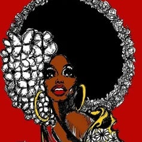
keep the funk alive
funk, electrofunk and i snuck in a few disco hits as well, please don't tell anyone.
Chill
10 playlistsjust vibin'
stuff to nod along and feel good to. chill-hop/lofi, wonky, modern funk.. Dilla-beat heavy at times.
don't wanna move or do anything
chillout for just idlin' at home alone in your underwear and slackin off. downtempo, triphop, dub, anything low-energy.
i'm very rich and i'm driving
rare groove / jazz & bass / jazzy downtempo to drive around in your bentley in Tuscany on your way to Monaco, wearing a suit, all dignified, without a care in the world.
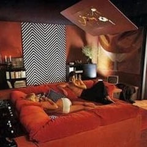
make some love but soulfully
70's (and around) soul to make love to your old lady by.
urban love
modern r'n'b for lovers hiding away in a small purple-dim loft in an unforgiving metropolis.
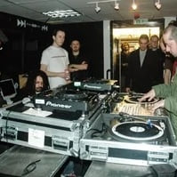
2006, London and you're stoned
oldschool dubstep, from the time when it had something to do with 'dub' and 'step'. thanks, Britain!
gaze into the lights and think
chill and dreamy tunes accompanying an awake-meditative state where you just look at a city skyline or the stars and feel insignificant.
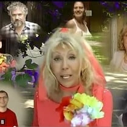
crystals, facebook and menopause
ethereal, newage, mystical ballads for your mom.
audible melatonin
ambient music for weirdos who prefer playing music in the background while sleeping.
melt away into the universe
turn the UV lights on, start this psy-chill / psy-dub / psybient playlist and become one with your beanbag. you'll thank me later.
Jamaican Roots
2 playlistsRaps
3 playlistsconscious culture
they grabbed the mic and SPAT. true hiphop not for the dancefloors and none of that trendy 808/drill bs.
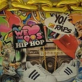
raise the roof yo!
oldschool (80's-90's) hiphop with a party vibe. mc's, dj's, graffwriters & bboys everywhere.
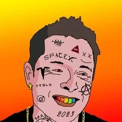
let them cook
modern hiphop / drill stuff and some uk grime for good measure. what the hell, let's add the weird raps here too.
Guitars & Such
10 playlistsrock on, everybody!
rock/metal tunes with a pop kick, a.k.a stuff you hear at rock parties that fit everyone.
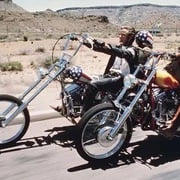
i'd marry my harley
classic rock / heavy metal / some country and blues songs for gen x who just got a bike to fight midlife crisis
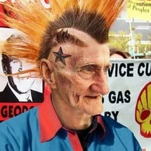
got some spare change?
punk and its cousins, can't get any more angry and juvenile than this.
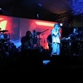
dude that festival was bonkers
neo-alternative rock, space rock, ethno-techno-dub-rock.. things we all enjoyed at not-too-mainstram music festivals in the early aughts.
for hipster coffee shop owners
indie, progg, chillwave, ethno, your fossilized-in-2013 customers will love it, unironically.
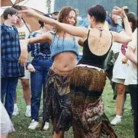
wear flowers in your hair
hippy / traditionally alternative or progressive rock and proto-rock tunes, war sucks, 'far out man', yadda yadda..
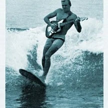
shakas & wipeout
surf rock and some fillers which are close to being surf rock. the vibe is there.
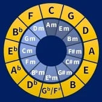
nerds with guitars
math-rock, progressive metal, it's a sport about who can waste away the most notes in 9 minutes.
wow i got nice shoes
post-rock / shoe-gaze / alternative metal because no one understands what you're going through.
mwuaaarrrrggh
metal in all of its glory.
Pop Universe
10 playlistsi like everything that's on tv
post-2010 pop hits, nuff said.
your youtube intro
future bass & kawaii bass, some deeper ones too.. modern melodic stuff to go with your logo for your lame gaming channel that will fail.
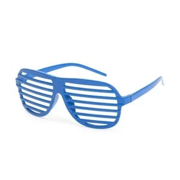
baseball caps & divas
hiphop/rap tunes with a serious pop kick. you heard'em all before. hello early 2000's.
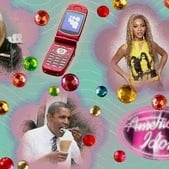
msn, ipods and myspace
early-00's pop you downloaded from limewire and kept on your 256MB mp3 player.
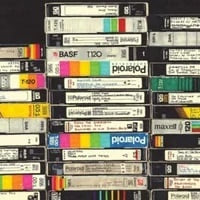
fanny packs, n64s and ripped jeans
90's pop in a wide range, but pretty sure you know most of these tunes so enjoy.
sing into a hairbrush
80's pop with extra cheeze. imagine your hairspray-stenched room consists of bright colors, rubik's cubes and pac-man posters.
black nail polish
being oh-so-alternative in the late 80's. it's new wave and gloomy early synthpop.
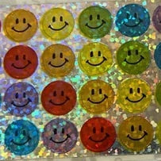
seatbelt substitute
sophisticated and easy tunes that are so safe, you don't need a seatbelt any more. (but seriously, please wear your seatbelt)
breakups suck
conventionally sad tearjerkers to go with your tub of ice cream and box of kleenex because you'll certainly die alone.
hey kids! do you like music?
kid-friendly songs, made for kids for the most part. this will keep 'em busy for about 2 minutes.
Electronic
6 playlistsmelt your face with BASS
EDM to the max with focus on hard trap, brostep and complextro. your parents will hate it.
i hate to break it to ya..
modern dancefloor-friendly breakbeat that focuses on moving your ass. post-2000 tunes mostly.
did you like the matrix?
late-90s breakbeat / big beat that match your frosted tips, black sunglasses and leather trench coat.
welcome, alien overlords!
celebrate with modern melodic drum & bass / neuro, plus a dash of trancy breaks and crossbreed.
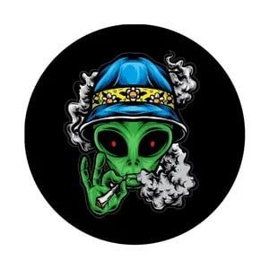
bruh, are we the aliens?
dnb (jumpup, techstep, even some jungle) with actual kickdrums and snares! and amen breaks. because the list got some jungle too.
let's cry naked on the subway
deep uk garage & some trip-hop, that sort of stuff. and several others too. keywords are: melancholic, deep, electronic, why.
Four on the Floor
6 playlists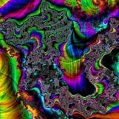
ride the dragon, aummmmm
goa, psytrance & adjacent genres. your mom told you not to drop acid but here you are..
the house party is about to start
house (both old and new, all subgenres) and some electroswing. ideal party starters with margaritas before you take off to the rave.
oh my techno goodness
non-soft techno bangers.
submerged in 4/4
deep dubtechno / techdub. i should've called the playlist 'dubmerged' but it's too late now.
come down at the afterparty
minimal trance & the like to shake off the night at 6AM wondering where your phone went
ex & estrogen
.. or ex-strogen, if you will. dark times of electronic music, a.k.a eurodance & some classic trance.
Hard & Heavy
4 playlistssadomazo dungeon
ebm, industrial, darkwave, you're like a vampire wearing latex in Sodom and Gomorrah, act like it.
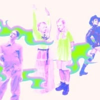
glitter, distortion and autotune
we get it. you're from the future. hyperpop, deconstructed club, i swear it's AI before AI was even a thing.
bald head & hakkuh
gabber / hardcore techno as the dutch intended. you know, all that thunderdome/terrordrome stuff.
good morning, neighbors!
noise / breakcore / cybergrind / too much. i added the most uncalled-for tunes here, so if you like torture...
Traditions
4 playlistshelp my grandma took over spotify
oldies your elderly will appreciate and bake you a delicious pie because you're a nice grandchild.
honor thy folk heritage
from tibetan chanting to balkan turbofolk through New York klezmer and avantgarde folk-adjacent artistry. country of origin: yes.
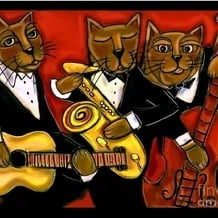
saxophone a z z
that's right, it's the jazz cats! from old timey mellow ballads to fusion madness.
dead guys in wigs
classical music.
Beautifully Weird
5 playlists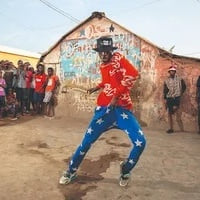
make heatwaves enjoyable
hello africa & latin america! all that modern dembow, kuduro, moombahton, reggaeton, footwork, goes quite hard ngl.
durban rooftop party
good modern stuff from ZA, namely amapiano and a pinch of gqom for good measure.
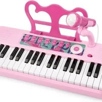
gameboys & synthesizers
synth music, chiptunes & VGM. Vangelis met super mario in a bar and this playlist was the result.
i understand quantum physics!
idm / braindance / drill&bass / early-2000s experimental electronic. finishing this playlist grants you instant Mensa membership.
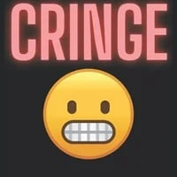
lol why does this exist
it's all just a joke. fun tunes that are funnier than you will ever be.